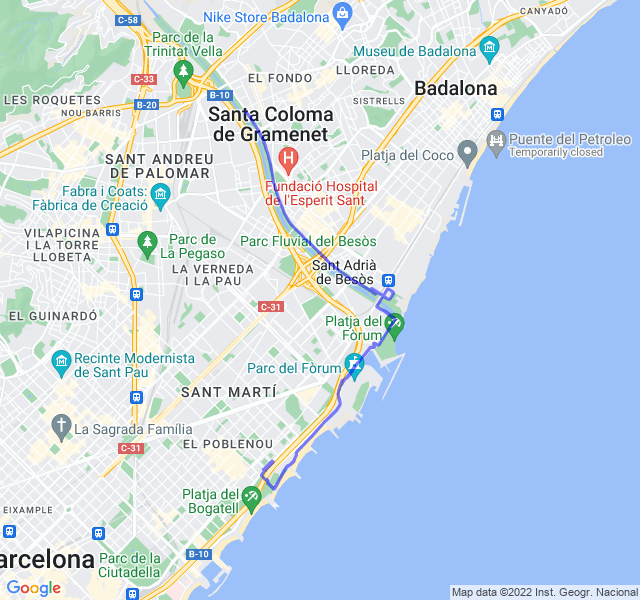

Fondo lento
| 1 min read
Cielo sereno, 27°C, Percepito 29°C, Umidità 69%, Vento 7m/s da SSO
Lungo dopo l'allenamento impegnativo di ieri. Come previsto ho pagato un po' negli ultimi chilometri facendo troppa fatica rispetto all'andatura.
Ancora caldo torrido e un po' di vento.
In generale è andata molto bene fino a quando ho curvato a 90 gradi. Da lì il vendo a favore mi ha fatto soffrire tantissimo il caldo ed ho iniziato a fare fatica.
Portato a casa.
